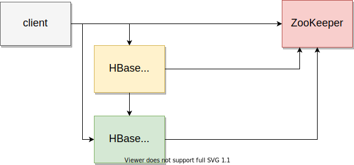
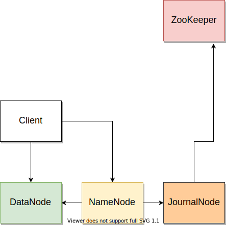

Java na Kubernetesie
problemy i rozwiązania na przykładzie HBase/HDFS
Michał Sochoń
Agenda
- Cel
- HBase + HDFS
- Kubernetes
- Konteneryzacjaaaaaaaaaaaaaaaaaaaaaaaaaaaaa!!!
- Co dalej
Cel
Używamy OpenTSDB, który ma 2 backendy:
- Google Bigtable
- HBase (i Zookeeper)
- bez 'managed service' z chmury
- bez stawiania własnych wirtualek
- unifikacja wdrożenia
Czyli wpakować HBase z backendem HDFS do Kubernetesa.
HBase
masters + region servers + zk

HDFS
zk + jn + nn + dn

Kubernetes
- Helm charty
- sidecar
- StatefulSety i preStop
- PVC i StorageClass
- serwisy po ClusterIP oraz Headless Service
Java + DNS cz. 1
/usr/local/openjdk-8/lib/security/java.security
..
#networkaddress.cache.ttl=-1
networkaddress.cache.negative.ttl=10
..
Fix:
..
networkaddress.cache.ttl=30
networkaddress.cache.negative.ttl=10
..
Headless Service
Fix:
apiVersion: v1
kind: Service
metadata:
name: release-name-hdfs-journalnode
labels:
app.kubernetes.io/name: hdfs
spec:
ports:
- name: web
port: 8480
clusterIP: None
publishNotReadyAddresses: true
selector:
app.kubernetes.io/name: hdfs
Java + DNS cz. II
wait_for_fqdn() { # $1 is DNS entry to test
count=0
while :
do
if nslookup $1 ; then
echo "DNS registered ${1}"; break;
else
echo "Waiting for DNS ${1}"; ((count=count+1)); sleep 3;
fi
if [ $count -gt 30 ]; then
echo "Failed to get DNS for ${1}, tries: 30, aborting.";
exit 1;
fi
done
}
StatefulSet cz. 1
Speedup:
apiVersion: apps/v1
kind: StatefulSet
metadata:
name: release-name-hdfs-namenode
labels:
app.kubernetes.io/name: hdfs
spec:
podManagementPolicy: Parallel
selector:
matchLabels:
app.kubernetes.io/name: hdfs
app.kubernetes.io/component: namenode
app.kubernetes.io/part-of: hdfs
serviceName: release-name-hdfs-namenode
replicas: 3
template:
StatefulSet cz. 2
preStop + termination grace period
# ...
terminationGracePeriodSeconds: 300
containers:
- name: datanode
image: "xxxxxxxxxxxxxxxxxxxxxxx"
# ...
env:
- name: MY_POD_IP
valueFrom:
fieldRef:
fieldPath: status.podIP
# ...
lifecycle:
preStop:
exec:
command:
- "/bin/bash"
- "-c"
- "hdfs dfsadmin -shutdownDatanode $MY_POD_IP:9867"
# ...
Java w kontenerze
...
-XX:+UnlockExperimentalVMOptions
-XX:+UseCGroupMemoryLimitForHeap
-Xmx ...
...
Java SE for Docker...
Limity zasobów
- całe rdzenie
- +Xmx - to zależy, do tego miejsce na zapis
Co dalej
- rozbicie na bardziej niezalezne uslugi
- Hadoop rack awareness
- scale-in i wyrejestrowanie DN
- trochę dokładniejsze metryki dla DN
- zbieranie logów z użyciem sidecar'a